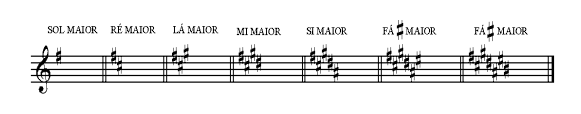

MÚSICA: É a arte de combinar os sons simultânea e sucessivamente, com ordem,equilíbrio e proporção, dentro do tempo.
• É a arte de manifestar os diversos afetos de nossa alma mediante o som.
As principais partes que constituem a MÚSICA são:
1) MELODIA – É a combinação dos SONS SUCESSIVOS (dados uns após outros). É
a concepção horizontal da Música.
2) HARMONIA – É a combinação dos SONS SIMULTÂNEOS (dados de uma só
vez). É a concepção vertical da Música.
3) RÍTMO – É a combinação dos valores tempo.
Escreve-se a música sobre 5 linhas e 4 espaços horizontais paralelas e eqüidistantes.
A estas linhas e espaços dá-se o nome de PAUTA ou PENTAGRAMA.
Exemplo:
CLAVE é o sinal colocado no inicio da pauta, sobre determinada linha, para dar nome às
notas. As Claves são 3 (três):
Além das cinco linhas e dos quatro espaços da pauta natural, existem ainda linhas e espaços
situados acima ou abaixo da pauta natural para auxiliá-la em sua extensão. Formam,
respectivamente, as pautas suplementares superior e inferior.
OBS.: Os sons musicais são representados graficamente por sinais chamados notas. À
escrita da música dá-se o nome de notação musical.
AS NOTAS SÃO SETE: DÓ – RÉ – MI – FÁ – SOL – LÁ – SI.
Essas sete notas ouvidas sucessivamente formam uma série de sons aos quais dá-se o nome
de escala.
NOME DAS NOTAS NA PAUTA
A música é representada pelo equilíbrio de sons e silêncios. Ambos têm durações
diferentes e são representados por sinais denominados valores.
Os valores que representam a duração dos sons musicais são chamados de
FIGURAS.
Os que representam as ausências de sons são chamados de PAUSAS.
A unidade de medida da música é o TEMPO. Cada tempo corresponde a uma
PULSAÇÃO.
Cada figura de SOM tem sua respectiva PAUSA que lhe corresponde ao mesmo tempo de
duração.
Vejamos, por exemplo, se uma semibreve tiver 4 tempos, a pausa de semibreve também
terá 4 tempos.
GENERALIDADES – As figuras que representam os valores das notas têm duração
indeterminada, isto é, não têm valor fixo.
Quem os determinará será uma fração ordinária
escrita após a clave e os acidentes fixos que é chamada de FÓRMULA DE COMPASSO.
Ex.: 4/4, 3/4 ,2/4 ,etc.
Os compassos de dois tempos são chamados de.............BINÁRIOS
Os compassos de três tempos são chamados de..............TERNÁRIOS
Os compassos de quatro tempos são chamados de..........QUATERNÁRIOS
Cada compasso é separado do seguinte por uma linha divisória vertical (TRAVESSÃO).
Na terminação de um trecho musical usa-se colocar dois travessões denominados de
Travessão Duplo.
Se a terminação for absoluta, isto é, na finalização da música, chamar-seá de PAUSA FINAL.
Em qualquer compasso, a figura que preenche um tempo chama-se UNIDADE DE
TEMPO; a figura que preenche um compasso chama-se UNIDADE DE COMPASSO.
Os compassos dividem-se em: SIMPLES e COMPOSTOS e são representados por uma
fração ordinária colocada no princípio da pauta, depois da clave.
COMPASSOS SIMPLES
Vejamos, por exemplo, um compasso simples BINÁRIO, TERNÁRIO OU
QUATERNÁRIO no qual a unidade de tempo seja a semínima ou a colcheia.
A semínima
vale duas colcheias e a colcheia vale duas semicolcheias. Logo, ambas são divisíveis por
dois. Por conseguinte, os compassos que tiverem sua unidade de tempo divisível por
2(dois) serão chamados de compassos simples.
Analisemos os termos das frações que representam os COMPASSOS SIMPLES.
O NUMERADOR determina o número de tempos do compasso.
Os algarismos que servem para numerador dos compassos simples são: 2 para o BINÁRIO,
3 para o TERNÁRIO e 4 para QUATERNÁRIO
O DENOMINADOR Indica a figura que representa a unidade de tempo.
Os números que servem como denominador são os seguintes:
1 - Representando a semibreve (considerada como a unidade)
2 - Representando a mínima (metade da semibreve)
4 - Representando a semínima (4ª parte da semibreve)
8 - Representando a colcheia (8ª parte da semibreve)
16 - Representando a semicolcheia (16ª parte da semibreve)
32 - Representando a fusa ( 32ª parte da semibreve)
64 - Representando a semifusa (64ª parte da semibreve).
Vejamos um compasso representado pela fórmula 2/4
Deduz-se o seguinte: Nesta fração 2/4 o numerador 2 indica o número de tempos. Trata-se
de um compasso de dois tempos, isto é, BINÁRIO. O denominador 4 determina para
unidade de tempo a figura que representa a 4ª parte da semibreve, ou seja, a semínima.
ESCALA DIATÔNICA DE DÓ – SUA FORMAÇÃO E SEUS GRAUS
SEMITOM – É o menor intervalo existente entre dois sons que o ouvido humano ocidental
pode perceber e classificar.
TOM – É o intervalo existente entre dois sons, formado por dois semitons.
ESCALA DIATÔNICA – é a sucessão de 8 sons por graus conjuntos guardando, entre si,
intervalos de tom ou de semitom.
Ex.:
Os tons e semitons contidos na escala diatônica são chamados de NATURAIS.
A cada uma das notas da escala, de acordo com a sua função na própria escala, dá-se o
nome de GRAU.
A escala diatônica possui 8 graus, sendo o VIII a repetição do primeiro.
OS GRAUS DA ESCALA SÃO ASSIM DENOMINADOS:
I grau....................TÔNICA
II grau...................SUPERTÔNICA
III grau..................MEDIANTE
IV grau.................SUBDOMINANTE
V grau..................DOMINANTE
VI grau.................SUPER DOMINANTE
VII grau................SENSÍVEL
VIII grau...............TÔNICA
O primeiro grau da escala é o mais importante. Todos os demais graus têm com ele
afinidade absoluta.
É o grau quem dá seu nome à escala e quem a termina de um modo completo, sem nada
deixar a desejar.
Temos, por exemplo, a nota DÓ em função de Tônica. Esta escala é, portanto, chamada de
ESCALA de DÓ ou escala em tom de DÓ.
Dá-se o nome de acidente ao sinal que se coloca antes de uma nota para modificar-lhe a
entoação.
A entoação das notas, conforme o sinal de alteração, poderá ser elevada ou abaixada em um
ou dois semitons. São os seguintes:
OBS. Nas notas sustenizadas o dobrado-sustenido eleva um semitom e nas notas
bemolizadas o dobrado-bemol abaixa um semitom.
Os acidentes podem ser FIXOS, OCORRENTES ou de PRECAUÇÃO.
FIXOS são aqueles que fazem parte da armação da clave. Seu efeito vale por todo o trecho
musical
OCORRENTES são aqueles que aparecem no decorrer de um trecho musical
predominando, somente, no compasso em que são escritos.
DE PRECAUÇÃO são aqueles que aparecem a fim de evitarem erros na leitura rápida.
Normalmente são grafados entre parêntesis.
A escala de DÓ Maior é modelo para as demais escalas de MODO MAIOR.
Convém
lembrar que nesta escala os intervalos de semitom são encontrados do III grau para o IV e
do VII para o VIII.
E assim, pelo mesmo sistema, encontraremos as demais escalas maiores.
Para se formar escalas com SUSTENIDOS, conta-se uma 5ª justa ascendente, a partir da
escala de Dó Maior.
DO MAIOR - - - - - Escala modelo
SOL MAIOR - - - - (Com 1 # - Fá)
RÉ MAIOR - - - - - (Com 2 # - Fá - Dó)
LA MAIOR - - - - - (Com 3 # - Fá - Dó - Sol)
MI MAIOR - - - - - (Com 4 # - Fá - Dó - Sol - Ré)
SI MAIOR - - - - - (Com 5 # - Fá - Dó - Sol - Ré - Lá)
FA # MAIOR - - - (Com 6 # - Fá - Dó - Sol - Ré - Lá - Mi)
DO # MAIOR - - - (Com 7 # - Fá - Dó - Sol - Ré - Lá - Mi - Si).
Eis as armaduras de Clave das escalas Maiores com SUSTENIDOS:

Seguindo o mesmo sistema, encontraremos as demais escalas maiores formadas com
Bemóis. Essas escalas são encontradas por 5ªs justas descendentes.
DÓ MAIOR - - - - - Escala Modelo
FÁ MAIOR - - - - - (Com 1b - SI)
SIb MAIOR - - - - - (Com 2 b - Si - Mi )
MIb MAIOR - - - - - (Com 3 b - Si - Mi - Lá)
LÁb MAIOR - - - - - (Com 4 b - Si - Mi - Lá - Ré)
RÉb MAIOR - - - - - (Com 5 b - Si - Mi - Lá - Ré - Sol)
SOLb MAIOR - - - - (Com 6 b - Si - Mi - Lá - Ré - Sol - Dó)
DÓ b MAIOR - - - - (Com 7 b – Si -Mi - Lá - Ré - Sol - Dó - Fá).
Eis as armaduras de Clave das escalas MAIORES com BEMOL:
OBS. “Os sustenidos aparecem (a começar do FÁ) por intervalos de 5ªs Justas
ascendentes”.
Os bemóis aparecem (a começar do SI) por intervalos de 5ª justas descendente.